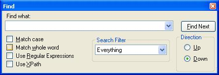
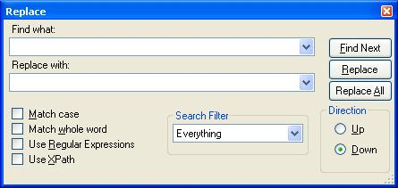
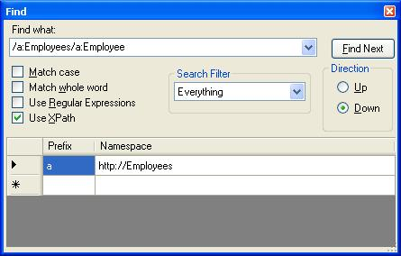

Find/Replace#
The "Find..." item under the Edit Menu (CTRL+F) brings up the following dialog:

The "Replace..." item under the Edit Menu (CTRL+H) changes this dialog to show the extra replace fields:

By default this dialog will allow you to search "Everything" in the current XML document with a given find string. You can limit the search in the following ways:
Match case: This will only find nodes that contain the exact search string in the same case.
Match whole word: this will only find nodes that contain the search string as a complete word, i.e., not a substring.
Use Regular Expressions: this will treat the find string as a regular expression. See .NET regular expressions for help with the regular expression language.
Use XPath: this option allows you to find nodes using an XPath expression. When you choose this option an extra table appears where you can edit the namespace prefix mappings used in the XPath expression. See XPath Syntax for help with the XPath expression language.

Search Filter: this option allows you to limit the search to just "Names" which means only search node names, or "Text" which means only search node values, or "Comments" which means only search comment nodes.
Direction: this allows you to search backwards from the current location in the document ("Up") or forwards ("Down").
Find Next: this button finds the next matching node in the specified direction after the currently selected node and it highlights the matching substring within the node name or value.
Replace: this button finds the next matching node in the specified direction after the currently selected node and if it finds something it replaces it with the replace text.
Replace All: this button replaces all matching text with the replace text.